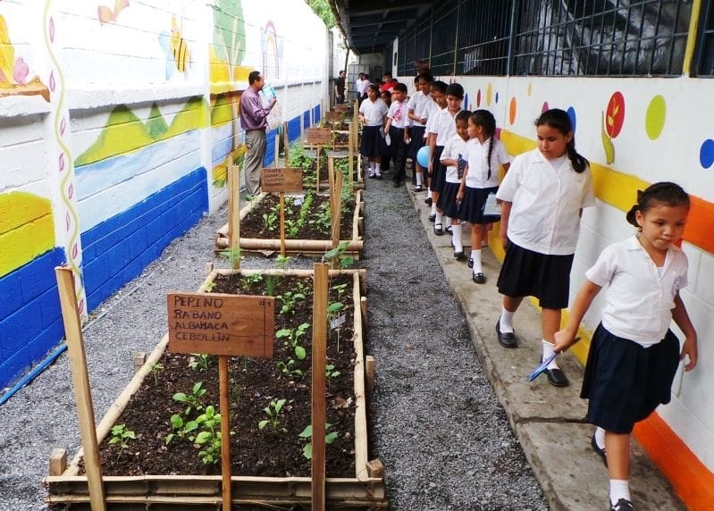

PROYECTO 1
Jardín de Polinizadores Monarca
Este proyecto corresponde al "Jardín de Polinizadores Monarca", implementado en el año 2025 en el patio del Centro Escolar Jose Marti (un programa piloto en El Salvador).